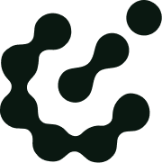
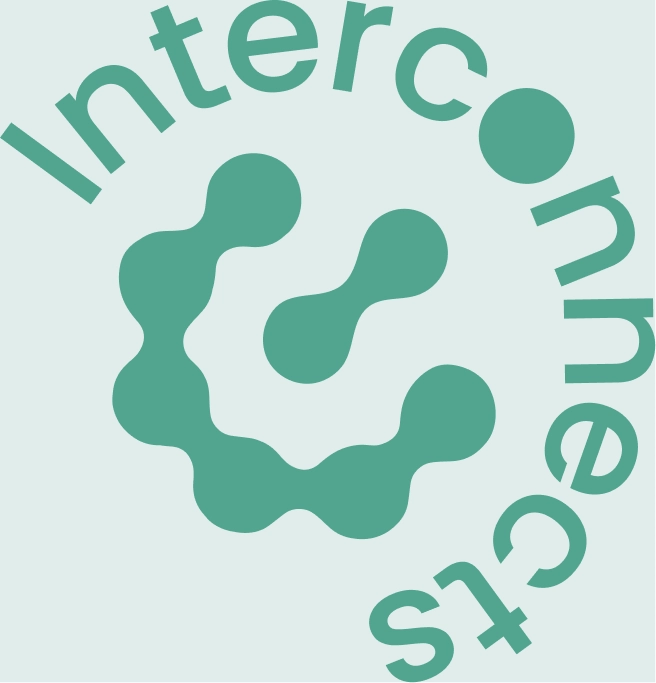

A demo presentation with math, code, and figures
Nathan Lambert
2026-02-22

The loss function for RLHF with a KL penalty:
Inline math works too: \nabla_\theta J(\theta) = \mathbb{E}_{\pi_\theta}[R \cdot \nabla_\theta \log \pi_\theta(a|s)]
from colloquium import Deck
deck = Deck(title="My Talk", author="Researcher")
deck.add_title_slide(subtitle="A research presentation")
deck.add_slide(
title="Key Results",
content="Our method achieves **state-of-the-art** performance.",
)
deck.build("output/")
This wider column has the main explanation text. The 60/40 split gives more room to the primary content while keeping a sidebar for supplementary info.
"Supplementary details go in the narrower column."
Supporting points:

Colloquium supports images in any layout. Here the wordmark sits in the wider column alongside explanatory text.
Images auto-scale to fit their container while maintaining aspect ratio.
| Model | Accuracy | F1 Score | Training Time |
|---|---|---|---|
| Baseline | 82.1% | 79.3% | 2h |
| Ours (small) | 91.4% | 89.7% | 4h |
| Ours (large) | 95.2% | 93.8% | 12h |
"The results demonstrate significant improvements across all metrics."
This slide uses the align and size directives to center all text and increase the font size.
Great for emphasis slides.
All content on this slide is vertically centered, like a title slide but with ## heading style.
text-4xl text-3xl text-2xl
text-xl — Key takeaways
text-lg — Callouts and introductions
text-base — Default body text
text-sm — Dense lists, supporting details
text-xs — Footnotes, references, fine print
Questions?
github.com/interconnects-ai/colloquium